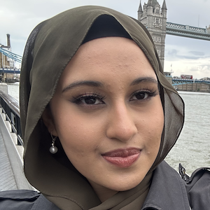
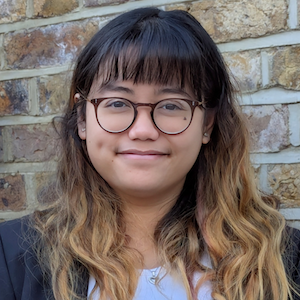
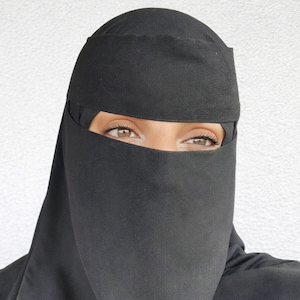
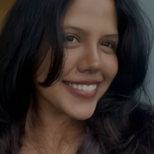

Our Team
Elena Torlai Triglia, PhD
Group leader
Elena trained as a computational and molecular biologist in the group of Prof. Ana Pombo at the Berlin Institute for Medical Systems Biology (Germany), where she studied gene regulation in stem cells and during neuronal development. After her PhD, she moved to Boston (MA, US), where she studied how healthy cells change during disease development as a postdoctoral researcher at the Broad Institute of MIT and Harvard, mentored by Prof. Brad Bernstein and Prof. Aviv Regev. Since Feb 2024, she is a Group Leader and Lecturer in Genetics, Genomics and Fundamental Cell Biology at QMUL.
Email: e.torlaitriglia@qmul.ac.uk

Tanzila Harun
PhD student - QMUL
Tanzila joined as a PhD student in the ETT Lab in May 2025 after completing a Masters in Biomedical and Molecular Sciences Research at King’s College London, where she characterised murine head and neck squamous carcinomas post fractionated radiotherapy. Her current research focuses on using computational and experimental approaches to study genetic and epigenetic regulation in melanomas.
Email: t.harun@qmul.ac.uk

Farah Sangkolah
Research Technician - QMUL
Farah graduated from Imperial College London with an MRes in Cancer Biology and was a research scientist at a London biotech startup where they worked on development of 3D ex vivo microtumour models. Farah has now joined the ETT lab as a research technician working on understanding the (epi)genetic bases of cell responses.
Email: n.bintisangkolah@qmul.ac.uk

Amaani Uvais
MSc Bioinformatics Student - QMUL
Amaani graduated in 2025 with a BSc in Biochemistry from Queen Mary University of London and is currently pursuing an MSc in Bioinformatics. During her undergraduate studies, she investigated the role of DNA Polymerase ε accessory subunits (POLE3/POLE4) in genome stability and their synthetic lethal interaction with CHTF18 in human cells. Her current work focuses on computational analysis of long-read single-cell RNA sequencing data to investigate isoform diversity in ageing and cancer.
Email: a.uvais@se22.qmul.ac.uk
Yui Ching Janice Wong
MSc Bioinformatics Student - QMUL
After graduating from Imperial College London with an MSc in Genomic Medicine, Janice worked as a Research Assistant at the University of Cambridge, where she contributed to tuberculosis research using zebrafish models. She subsequently developed an interest in computational approaches, leading her to pursue an MSc in Bioinformatics at QMUL. Her current research project, co-supervised by the ETT and Mennella lab, focuses on multi-omics integration to investigate chronic respiratory diseases and the impact of environmental pollutant exposure.
Email: y.wong@se25.qmul.ac.uk

Jane Deepanjali
MSc Biotechnology Student - QMUL
Jane is an MSc Biotechnology student at Queen Mary University of London, working on a project between the ETT and the De Vita lab. Prior to this she spent three years in clinical data management at Alcon, supporting and leading data activities across ophthalmology studies. She is particularly interested in cancer research, biotech product development, and the broader clinical research ecosystem.
Email: j.deepanjali@se25.qmul.ac.uk